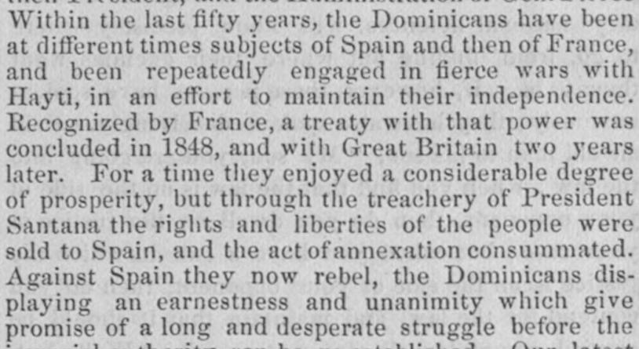
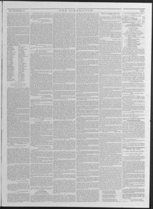

See the full pageVer la página completaFor a time they enjoyed a considerable degree of prosperity, butPor un tiempo disfrutaron de un considerable grado de prosperidad, pero
The newspaper reported that after President Santana betrayed the Dominican people by annexing them to Spain, the Dominicans launched a unanimous rebellion marked by fierce fighting and atrocities on both sides. Recent reports indicated that Spanish troops suffered heavy losses, including a division of 2,000 men that was forced to capitulate after Santiago was burned, while another division of 1,600 men was repulsed. Additionally, the town of San Carlos near Santo Domingo city was reportedly burned by the rebels.El diario informó que, luego de que el presidente Santana traicionara al pueblo dominicano anexionándolo a España, los dominicanos emprendieron una rebelión unánime caracterizada por encarnizados combates y atrocidades de ambos bandos. Informes recientes indicaban que las tropas españolas sufrieron severas bajas, incluida una división de 2.000 soldados obligada a capitular tras el incendio de Santiago, al tiempo que otra división de 1.600 hombres fue rechazada. Además, se comunicó que el poblado de San Carlos, cercano a la ciudad de Santo Domingo, fue incendiado por los insurrectos.
FULL TEXT:TRADUCCIÓN:
Within the last fifty years, the Dominicans have been at different times subjects of Spain and then of France, and been repeatedly engaged in fierce wars with Hayti, in an effort to maintain their independence. Recognized by France, a treaty with that power was concluded in 1848, and with Great Britain two years later. For a time they enjoyed a considerable degree of prosperity, but through the treachery of President Santana the rights and liberties of the people were sold to Spain, and the act of annexation consummated. Against Spain they now rebel, the Dominicans displaying an earnestness and unanimity which give promise of a long and desperate struggle before theDentro de los últimos cincuenta años, los dominicanos han sido en diferentes tiempos súbditos de España y luego de Francia, y han estado repetidamente comprometidos en guerras feroces con Haití, en un esfuerzo por mantener su independencia. Reconocidos por Francia, un tratado con esa potencia fue concluido en 1848, y con Gran Bretaña dos años después. Por un tiempo disfrutaron un grado considerable de prosperidad, pero por la traición del Presidente Santana los derechos y libertades del pueblo fueron vendidos a España, y el acto de anexión consumado. Contra España ahora se rebelan, los dominicanos desplegando una seriedad y unanimidad que dan promesa de una lucha larga y desesperada antes de que la
The Liberator. Boston, Mass., October 9, 1863. Page 3.